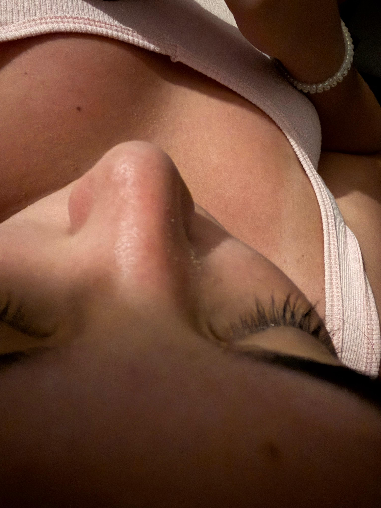
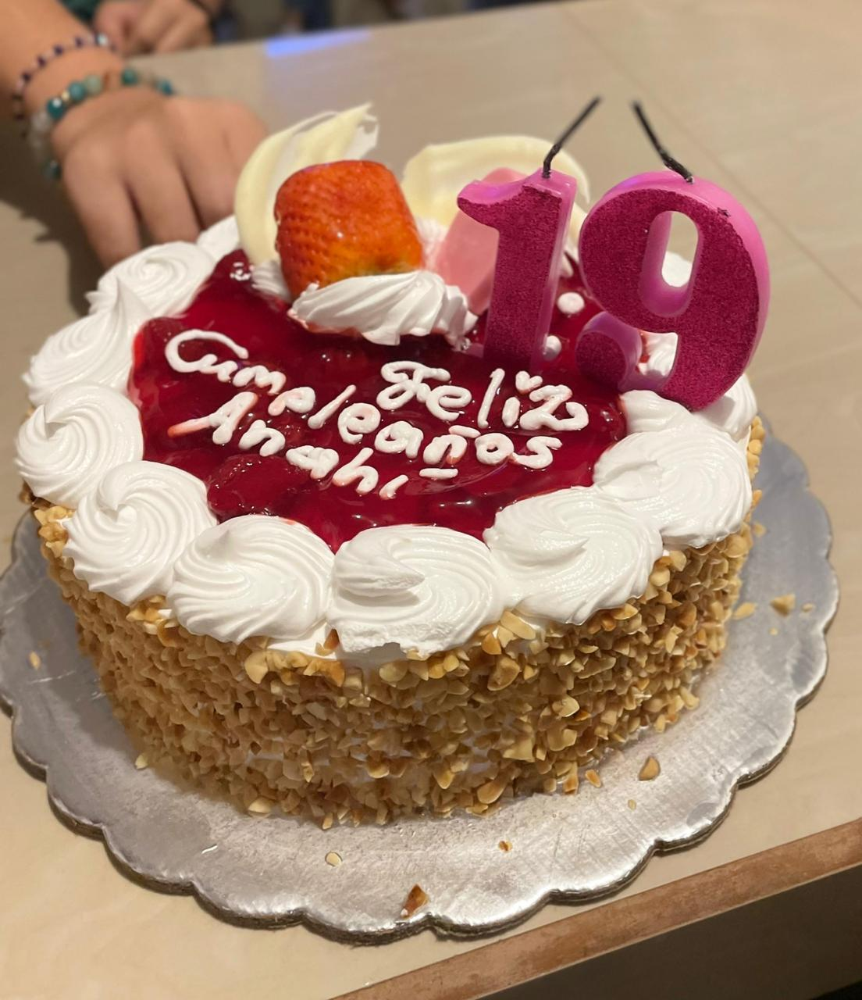
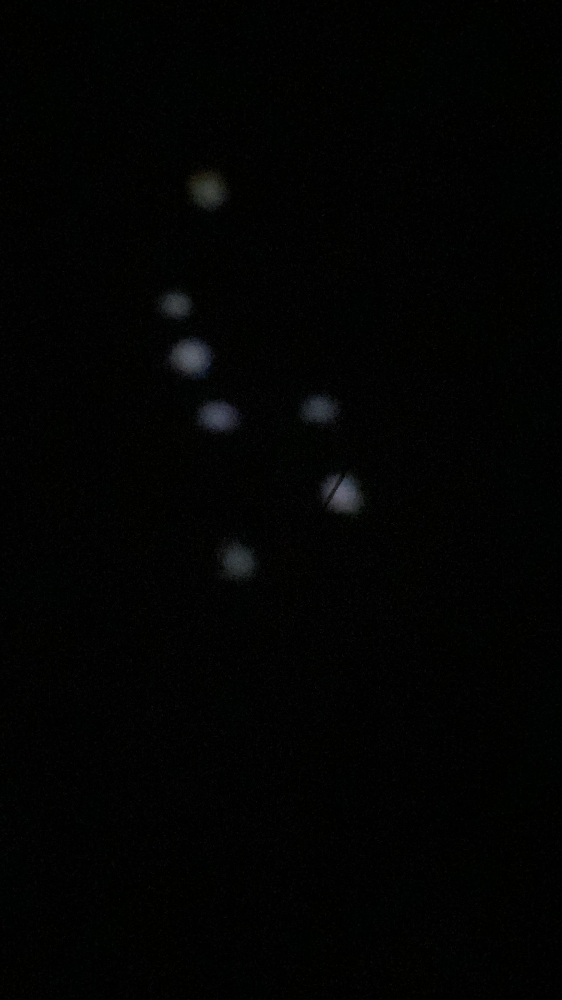
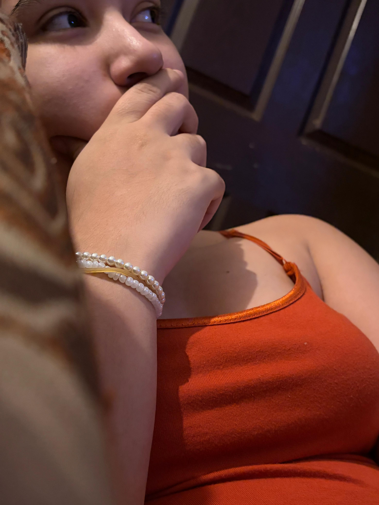

01
Me divierto mucho con usted. Amo cada risa suya, todas las salidas, el tiempo juntos, ser su ayudante en la cocina, todo. Todo es muy bonito y lo amo, así como su .


Algo 0 cursi
Yo sé que muchas fotos que tomo no las tomo bien, pero la verdad me gustan. Me gusta cómo se ve cuando está distraída, me ve y se esconde JAJJJA. Espero que le gusten; son fotos que me hacen pensar en usted, en cosas que hemos hecho.
¿Quieres que le deje de tomar foto?
TOP 3 FOTOS FAV
01

02

03
Espero que te guste, de verdad lo hice con cariño.
01 / 16






Presione la foto...
01 / 06
Video 01
Cuando veo este video, me da mucha risa. Es raro, pero me gusta hacer eso, simplemente porque no te gusta y me da risa su reacción. Amo este video.
Cuando veo este video, me da mucha risa. Es raro, pero me gusta hacer eso, simplemente porque no te gusta y me da risa su reacción. Amo este video.
A este video le tengo demasiado cariño. Fue la primera vez que me dormí encima suyo. Se sintió una paz, el abrazarla, estar con usted. Amo quedarme dormido encima suyo y estando con usted.
El día que se me olvidaron las flores amarillas... Yo sé que no te doy flores muy seguido, y cuando es un día como el de las flores amarillas, se me olvida. Prometo tratar de hacerte sentir especial con más detalles de mi parte. Este video es demasiado gracioso, cómo me vuelves a ver, lo amo. Te amo, preciosa. Perdóneme por no hacerte sentir especial siempre.
Hay que admitir que es gracioso. Ayudarte a preparar tus pedidos, aprender y ver cómo haces todo, realmente se siente bien. He aprendido tantas cosas con usted que te robaré el emprendimiento... JAJAAJ. De verdad, gracias por todo, mujer, por dejarme ser parte de eso que es tuyo y tratar de incluirme en todo. Gracias, de verdad.
JAJAJ, recuerdo ese nivel, el estrés y ansiedad que nos causó, pero tengo que admitir que cada vez que moríamos, el estarlo intentando y resolverlo fue demasiado divertido. Jugar Mario fue una de las cosas que disfruté, porque me tocó enseñarte desde cero y verte morir siempre. Besoos. Hay que jugar el de Play...
El día que comimos como gordoss, probando de todo JJAAJJA. Ese día comimos demasiado y llegamos muertos, pero nos alcanzó para que chocobom. Fue un día súper lindo. Hay que seguir probando de todo, hasta ya no tener nada que probar acá en Liberia.
De verdad
Genuinamente, espero que le guste, mujer. Puedes pensar que no lo hice yo, pero estuve varios días luchando, porque la idea que tenía la quise meter sí o sí en la web. Entonces, está creada con mi poca creatividad. Te amo.
Mini juego
Elige dos piezas.
Recuerdo 01
Hay fotos que no necesitan explicar mucho. Esta abre la galería porque se siente como el inicio de algo bonito.